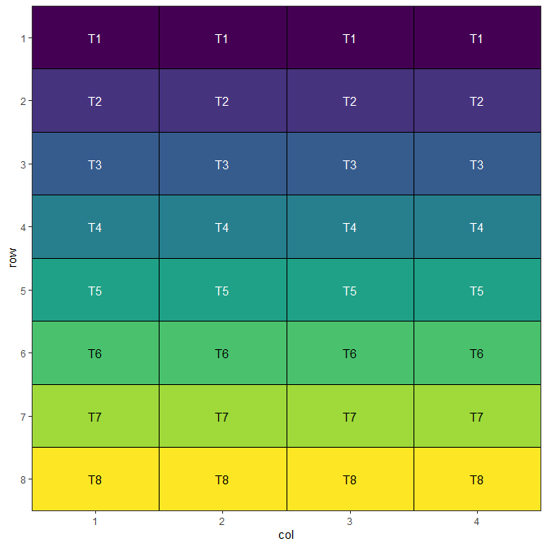
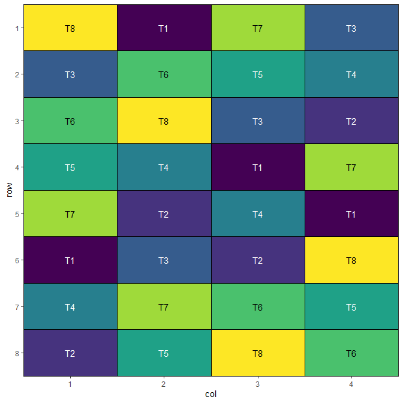
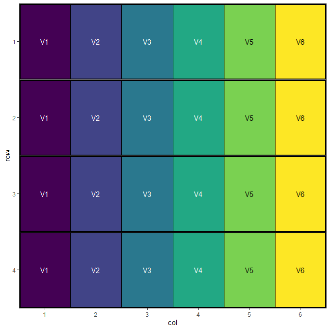
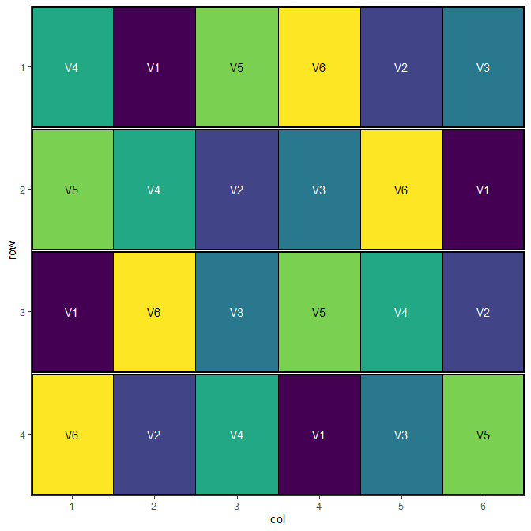
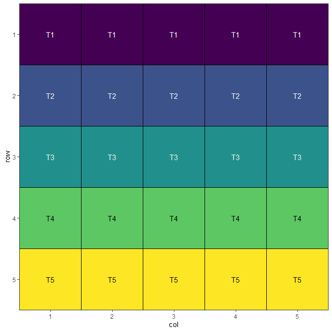
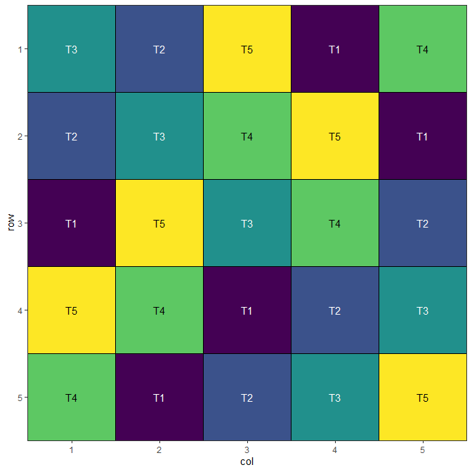
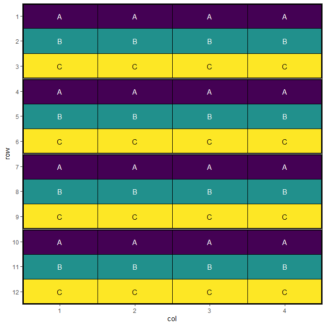
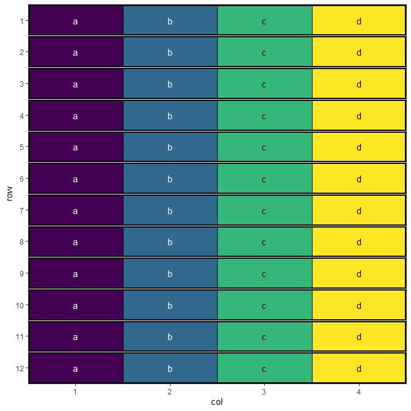
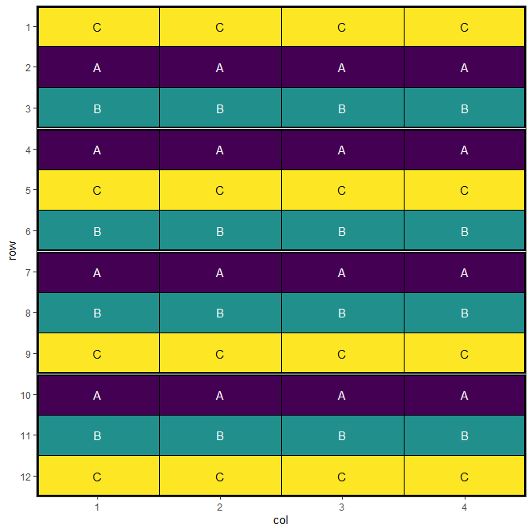
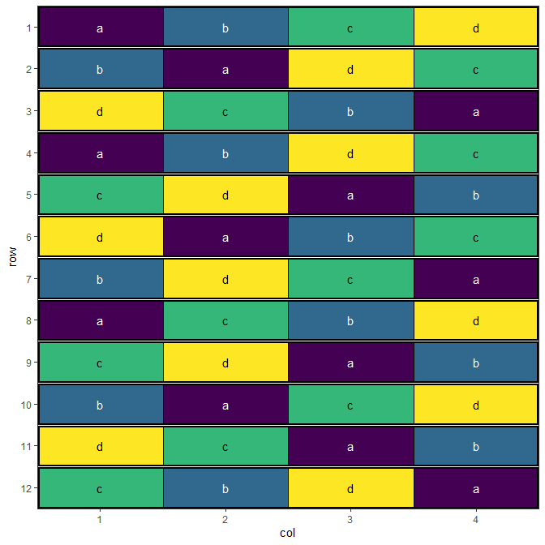

Introduction
Agricultural experiments require careful spatial design to minimise the effects of field heterogeneity and neighbour interactions while maximising statistical power. The speed package provides tools for creating spatially efficient experimental designs through simulated annealing optimisation.
This vignette demonstrates how to use speed for common agricultural experimental designs, showing how spatial optimisation can improve the efficiency and validity of field trials. We’ll work through four key design types, each building in complexity and showing different features of the package.
For advanced and specialised experimental designs (e.g., split-split plot, strip-plot, incomplete block, p-rep, and more), see the companion vignette: Complex Agricultural Experimental Designs with speed.
Completely Randomised Design (CRD)
Overview
The Completely Randomised Design is the simplest experimental design where treatments are assigned to experimental units entirely at random. While simple to implement, a CRD doesn’t account for spatial variation in field conditions, which can be mitigated by spatial optimisation techniques.
When to Use
- Homogeneous experimental conditions
- Controlled environments (greenhouse, growth chamber)
- Small-scale experiments with minimal spatial variation
- Proof-of-concept studies
Example: Field Trial with 8 Varieties
Consider a field trial testing 8 new wheat varieties with 4 replicates each. Even though treatments are assigned randomly, spatial optimisation can reduce neighbour effects and improve precision.
Setting Up CRD with speed
In agricultural contexts, even completely randomised designs benefit from spatial optimisation to minimise treatment clustering and neighbour effects. Firstly we will initialise a data frame representing the design and visualise it. This design has 4 replicates of 8 treatments or items, with 8 rows and 4 columns.
# Initialise data frame
crd_design <- initialise_design_df(items = 8, nrows = 8, ncols = 4)
head(crd_design)## row col treatment
## 1 1 1 T1
## 2 2 1 T2
## 3 3 1 T3
## 4 4 1 T4
## 5 5 1 T5
## 6 6 1 T6
This is a systematic layout; note how the initial layout arranges treatments in a repeating, non-random pattern. This will now be randomised before visualisation.
Performing the Optimisation
The main speed() function performs the optimisation. It has been set up with sensible defaults to allow application to a wide variety of situations. In this case, we only need to provide the design data frame for it to operate on, the column name of the data frame to use for the treatments, and a seed for reproducibility.
crd_result <- speed(crd_design,
swap = "treatment",
seed = 42)## row and col are used as row and column, respectively.## Optimising level: single treatment within whole design
## Optimal score reached at iteration 730 for level single treatment within whole design
crd_result## Optimised Experimental Design
## ----------------------------
## Score: 2.285714
## Iterations Run: 730
## Stopped Early: TRUE
## Treatments: T1, T2, T3, T4, T5, T6, T7, T8
## Seed: 42Output of the Optimisation
The printed output from the returned design object gives a quick identity check: the final optimisation score (lower is better), how many iterations were run and whether it stopped early, the treatments, and the seed. For a fuller, statistically meaningful evaluation of the design - layout, replication, score decomposition, connectedness and more - use summary() (see Evaluating a Design). The output object contains some additional components, which can be seen below:
str(crd_result)## List of 9
## $ design_df :Classes 'design' and 'data.frame': 32 obs. of 3 variables:
## ..$ row : int [1:32] 1 1 1 1 2 2 2 2 3 3 ...
## ..$ col : int [1:32] 1 2 3 4 1 2 3 4 1 2 ...
## ..$ treatment: chr [1:32] "T8" "T1" "T7" "T3" ...
## ..- attr(*, "out.attrs")=List of 2
## .. ..$ dim : Named int [1:2] 8 4
## .. .. ..- attr(*, "names")= chr [1:2] "row" "col"
## .. ..$ dimnames:List of 2
## .. .. ..$ row: chr [1:8] "row=1" "row=2" "row=3" "row=4" ...
## .. .. ..$ col: chr [1:4] "col=1" "col=2" "col=3" "col=4"
## $ score : num 2.29
## $ scores : num [1:730] 40 36.3 32.4 28.3 24.1 ...
## $ temperatures : num [1:730] 100 99 98 97 96.1 ...
## $ iterations_run: num 730
## $ stopped_early : logi TRUE
## $ treatments : chr [1:8] "T1" "T2" "T3" "T4" ...
## $ seed : num 42
## $ metadata :List of 6
## ..$ levels : chr "single treatment within whole design"
## ..$ row_column: chr "row"
## ..$ col_column: chr "col"
## ..$ grid_by : NULL
## ..$ per_level :List of 1
## .. ..$ single treatment within whole design:List of 13
## .. .. ..$ swap : chr "treatment"
## .. .. ..$ spatial_factors :Class 'formula' language ~row + col
## .. .. .. .. ..- attr(*, ".Environment")=<environment: 0x000002b0d2e34660>
## .. .. ..$ spatial_cols : chr [1:2] "row" "col"
## .. .. ..$ adj_weight : num 1
## .. .. ..$ bal_weight : num 1
## .. .. ..$ iterations : num 10000
## .. .. ..$ start_temp : num 100
## .. .. ..$ cooling_rate : num 0.99
## .. .. ..$ obj_function :function (layout_df, swap, spatial_cols, adj_weight = 1, bal_weight = 1,
## row_column = "row", col_column = "col", ...)
## .. .. .. ..- attr(*, "srcref")= 'srcref' int [1:8] 41 23 90 1 23 1 41 90
## .. .. .. .. ..- attr(*, "srcfile")=Classes 'srcfilecopy', 'srcfile' <environment: 0x000002b0cae73a50>
## .. .. ..$ final_score : num 2.29
## .. .. ..$ final_components: Named num [1:2] 0 2.29
## .. .. .. ..- attr(*, "names")= chr [1:2] "adjacency" "balance"
## .. .. ..$ optimal_score : num 2.29
## .. .. ..$ stop_reason : chr "optimal"
## ..$ call : language speed(data = crd_design, swap = "treatment", seed = 42)
## - attr(*, "class")= chr [1:2] "design" "list"Visualise the Output
The final step is to visualise the optimised design. The plot below displays the spatial arrangement of treatments after optimisation, allowing you to easily check for clustering, spatial trends, or other patterns that may affect your experiment. A well-randomised and spatially efficient design will show treatments distributed evenly across the field, helping to minimise neighbour effects and maximise the reliability of your results.
autoplot(crd_result)
A nicely randomised1 and spatially optimal design!
Evaluating a Design
print() tells you what a design is; summary() helps you evaluate and defend it. Calling summary() on any design object reports a set of structural and evaluation metrics:
summary(crd_result)## Design Summary
## ==============
##
## Structure
## ---------
## Layout: 8 rows x 4 cols (32 plots)
## Treatments: 8
## Replication: 4 each
## Spatial: row (8), col (4)
##
## Optimisation
## ------------
## Seed: 42
## Objective: objective_function
## Score: 2.2857 (initial 40 -> final 2.2857)
## adjacency 0
## balance 2.2857
## Optimal: 2.2857 (reached)
## Iterations: 730 / 10,000 (optimal reached)
## Temperature: start 100, cooling 0.99
##
## Evaluation
## ----------
## Connected: connected - treatment estimable given row + col [model (row + col)]
## Concurrence: no block factor
## Blk. spread: no block factor
## Repl. span: worst-case 2 (row), 2 (col) across 8 replicated treatment(s)
## Efficiency: not requested (set efficiency = TRUE)
## Self-adj.: none
## Neighbour: min 0, max 5 over 28 pairs (variance 1.9048), 4 never adjacentThe output is organised into sections:
- Structure – the layout, the number of treatments and their replication, and the spatial factors with their numbers of levels.
- Optimisation – the objective used, the final score decomposed into its adjacency and balance components (each already weighted, so they sum to the final score), the initial-to-final score, the iterations run and the temperature schedule.
-
Evaluation – design-quality diagnostics:
-
Connectedness – whether treatment effects are estimable. Fits
lm(~ <spatial factors + block> + treatment)and checks for aliased treatment terms; the nuisance side of the model adjusts to whatever the design is stratified by (row/col, and a block factor when present). - Concurrence – for incomplete block designs, how often pairs of treatments share a block (constant concurrences indicate a balanced incomplete-block design). It is skipped for complete designs such as RCBD and split-plots, where it carries no information.
- Replicate span – the smallest spatial separation between replicates of a treatment; small values flag replicates sitting close together.
-
Connectedness – whether treatment effects are estimable. Fits
Any issues – a design that ran to its iteration cap, unequal replication, or a disconnected design – are surfaced as Flags at the top.
Some metrics are opt-in or context-dependent. The A-efficiency factor (a row–column model metric) is computed only when you ask for it:
summary(crd_result, efficiency = TRUE)## Design Summary
## ==============
##
## Structure
## ---------
## Layout: 8 rows x 4 cols (32 plots)
## Treatments: 8
## Replication: 4 each
## Spatial: row (8), col (4)
##
## Optimisation
## ------------
## Seed: 42
## Objective: objective_function
## Score: 2.2857 (initial 40 -> final 2.2857)
## adjacency 0
## balance 2.2857
## Optimal: 2.2857 (reached)
## Iterations: 730 / 10,000 (optimal reached)
## Temperature: start 100, cooling 0.99
##
## Evaluation
## ----------
## Connected: connected - treatment estimable given row + col [model (row + col)]
## Concurrence: no block factor
## Blk. spread: no block factor
## Repl. span: worst-case 2 (row), 2 (col) across 8 replicated treatment(s)
## Efficiency: 0.8232 (A-efficiency, row-column model)
## Self-adj.: none
## Neighbour: min 0, max 5 over 28 pairs (variance 1.9048), 4 never adjacentThe returned summary is also a list, so individual metrics can be pulled out programmatically:
s <- summary(crd_result)
s$per_level[[1]]$score## $initial
## [1] 40
##
## $final
## [1] 2.285714
##
## $optimal
## [1] 2.285714
##
## $components
## adjacency balance
## 0.000000 2.285714Randomised Complete Block Design (RCBD)
Overview
RCBD is one of the most commonly used designs in agricultural research. It controls for one source of variation by grouping experimental units into homogeneous blocks, with each treatment appearing once per block.
When to Use
- Field experiments with known gradient (slope, soil type, irrigation)
- Medium to large experiments (3+ treatments)
- When blocking factor explains significant variation
- Multi-location trials
Example: Variety Trial Across Field Gradient
Consider testing 6 barley varieties across a field with a moisture gradient. Using 4 blocks perpendicular to the gradient helps control for soil moisture variation.
Setting Up RCBD with speed
Here we initialise a data frame for a design with 4 blocks and 6 treatments, arranged in 4 rows and 6 columns. Note that we can specify treatments in the items argument.
rcbd_design <- initialise_design_df(items = paste0("V", 1:6), nrows = 4, ncols = 6, block_nrows = 1, block_ncols = 6)
head(rcbd_design)## row col treatment row_block col_block block
## 1 1 1 V1 1 1 1
## 2 2 1 V1 2 1 2
## 3 3 1 V1 3 1 3
## 4 4 1 V1 4 1 4
## 5 1 2 V2 1 1 1
## 6 2 2 V2 2 1 2
This is a systematic block layout; each block contains all treatments in a repeating pattern. This will now be randomised within blocks.
Performing the Optimisation
rcbd_result <- speed(rcbd_design,
swap = "treatment",
swap_within = "block",
seed = 42)## row and col are used as row and column, respectively.## Optimising level: single treatment within block
## Optimal score reached at iteration 329 for level single treatment within block
rcbd_result## Optimised Experimental Design
## ----------------------------
## Score: 1.6
## Iterations Run: 329
## Stopped Early: TRUE
## Treatments: V1, V2, V3, V4, V5, V6
## Seed: 42Output of the Optimisation
str(rcbd_result)## List of 9
## $ design_df :Classes 'design' and 'data.frame': 24 obs. of 6 variables:
## ..$ row : int [1:24] 1 1 1 1 1 1 2 2 2 2 ...
## ..$ col : int [1:24] 1 2 3 4 5 6 1 2 3 4 ...
## ..$ treatment: chr [1:24] "V4" "V1" "V5" "V6" ...
## ..$ row_block: num [1:24] 1 1 1 1 1 1 2 2 2 2 ...
## ..$ col_block: num [1:24] 1 1 1 1 1 1 1 1 1 1 ...
## ..$ block : num [1:24] 1 1 1 1 1 1 2 2 2 2 ...
## ..- attr(*, "out.attrs")=List of 2
## .. ..$ dim : Named int [1:2] 4 6
## .. .. ..- attr(*, "names")= chr [1:2] "row" "col"
## .. ..$ dimnames:List of 2
## .. .. ..$ row: chr [1:4] "row=1" "row=2" "row=3" "row=4"
## .. .. ..$ col: chr [1:6] "col=1" "col=2" "col=3" "col=4" ...
## $ score : num 1.6
## $ scores : num [1:329] 34 29.6 25.2 21.6 18.4 16.2 13 12.2 8.6 10.4 ...
## $ temperatures : num [1:329] 100 99 98 97 96.1 ...
## $ iterations_run: num 329
## $ stopped_early : logi TRUE
## $ treatments : chr [1:6] "V1" "V2" "V3" "V4" ...
## $ seed : num 42
## $ metadata :List of 6
## ..$ levels : chr "single treatment within block"
## ..$ row_column: chr "row"
## ..$ col_column: chr "col"
## ..$ grid_by : NULL
## ..$ per_level :List of 1
## .. ..$ single treatment within block:List of 13
## .. .. ..$ swap : chr "treatment"
## .. .. ..$ spatial_factors :Class 'formula' language ~row + col
## .. .. .. .. ..- attr(*, ".Environment")=<environment: 0x000002b0d8c40d98>
## .. .. ..$ spatial_cols : chr [1:2] "row" "col"
## .. .. ..$ adj_weight : num 1
## .. .. ..$ bal_weight : num 1
## .. .. ..$ iterations : num 10000
## .. .. ..$ start_temp : num 100
## .. .. ..$ cooling_rate : num 0.99
## .. .. ..$ obj_function :function (layout_df, swap, spatial_cols, adj_weight = 1, bal_weight = 1,
## row_column = "row", col_column = "col", ...)
## .. .. .. ..- attr(*, "srcref")= 'srcref' int [1:8] 41 23 90 1 23 1 41 90
## .. .. .. .. ..- attr(*, "srcfile")=Classes 'srcfilecopy', 'srcfile' <environment: 0x000002b0cae73a50>
## .. .. ..$ final_score : num 1.6
## .. .. ..$ final_components: Named num [1:2] 0 1.6
## .. .. .. ..- attr(*, "names")= chr [1:2] "adjacency" "balance"
## .. .. ..$ optimal_score : num 1.6
## .. .. ..$ stop_reason : chr "optimal"
## ..$ call : language speed(data = rcbd_design, swap = "treatment", swap_within = "block", seed = 42)
## - attr(*, "class")= chr [1:2] "design" "list"Visualise the Output
autoplot(rcbd_result)
A well-randomised and spatially efficient RCBD layout.
Latin Square Design
Overview
Latin Square Design controls for two sources of variation simultaneously by arranging treatments in a square grid where each treatment appears exactly once in each row and column.
When to Use
- Small to medium experiments (3-10 treatments)
- Two known sources of variation (e.g., row and column effects)
- Greenhouse bench experiments
- Field experiments with two-way gradients
Constraints
- Number of treatments must equal number of rows and columns
- Limited degrees of freedom for error
- Assumes no row × column interaction
Setting Up Latin Square with speed
Here we initialise a 5 × 5 Latin square with 5 treatments.
latin_square_design <- initialise_design_df(items = 5, nrows = 5, ncols = 5)
head(latin_square_design)## row col treatment
## 1 1 1 T1
## 2 2 1 T2
## 3 3 1 T3
## 4 4 1 T4
## 5 5 1 T5
## 6 1 2 T1
This is a systematic Latin square layout; each treatment appears once per row and column. The design will now be randomised.
Performing the Optimisation
Because of the spatial optimisation algorithm built into speed, with default optimization parameters and enough iterations, it should arrive at a Latin square design in cases where the number of rows, columns, treatments and replicates are all equal such as this.
latin_square_result <- speed(latin_square_design,
swap = "treatment",
seed = 42)## row and col are used as row and column, respectively.## Optimising level: single treatment within whole design
## Level: single treatment within whole design Iteration: 1000 Score: 1 Best: 1 Since Improvement: 308
## Optimal score reached at iteration 1040 for level single treatment within whole design
latin_square_result## Optimised Experimental Design
## ----------------------------
## Score: 0
## Iterations Run: 1041
## Stopped Early: TRUE
## Treatments: T1, T2, T3, T4, T5
## Seed: 42Output of the Optimisation
Note that the final score of zero shows that the algorithm has found a perfect Latin Square solution.
str(latin_square_result)## List of 9
## $ design_df :Classes 'design' and 'data.frame': 25 obs. of 3 variables:
## ..$ row : int [1:25] 1 1 1 1 1 2 2 2 2 2 ...
## ..$ col : int [1:25] 1 2 3 4 5 1 2 3 4 5 ...
## ..$ treatment: chr [1:25] "T3" "T2" "T5" "T1" ...
## ..- attr(*, "out.attrs")=List of 2
## .. ..$ dim : Named int [1:2] 5 5
## .. .. ..- attr(*, "names")= chr [1:2] "row" "col"
## .. ..$ dimnames:List of 2
## .. .. ..$ row: chr [1:5] "row=1" "row=2" "row=3" "row=4" ...
## .. .. ..$ col: chr [1:5] "col=1" "col=2" "col=3" "col=4" ...
## $ score : num 0
## $ scores : num [1:1041] 45 39 37 33.5 30.5 32.5 32 30.5 26.5 29 ...
## $ temperatures : num [1:1041] 100 99 98 97 96.1 ...
## $ iterations_run: num 1041
## $ stopped_early : logi TRUE
## $ treatments : chr [1:5] "T1" "T2" "T3" "T4" ...
## $ seed : num 42
## $ metadata :List of 6
## ..$ levels : chr "single treatment within whole design"
## ..$ row_column: chr "row"
## ..$ col_column: chr "col"
## ..$ grid_by : NULL
## ..$ per_level :List of 1
## .. ..$ single treatment within whole design:List of 13
## .. .. ..$ swap : chr "treatment"
## .. .. ..$ spatial_factors :Class 'formula' language ~row + col
## .. .. .. .. ..- attr(*, ".Environment")=<environment: 0x000002b0ca4538c0>
## .. .. ..$ spatial_cols : chr [1:2] "row" "col"
## .. .. ..$ adj_weight : num 1
## .. .. ..$ bal_weight : num 1
## .. .. ..$ iterations : num 10000
## .. .. ..$ start_temp : num 100
## .. .. ..$ cooling_rate : num 0.99
## .. .. ..$ obj_function :function (layout_df, swap, spatial_cols, adj_weight = 1, bal_weight = 1,
## row_column = "row", col_column = "col", ...)
## .. .. .. ..- attr(*, "srcref")= 'srcref' int [1:8] 41 23 90 1 23 1 41 90
## .. .. .. .. ..- attr(*, "srcfile")=Classes 'srcfilecopy', 'srcfile' <environment: 0x000002b0cae73a50>
## .. .. ..$ final_score : num 0
## .. .. ..$ final_components: Named num [1:2] 0 0
## .. .. .. ..- attr(*, "names")= chr [1:2] "adjacency" "balance"
## .. .. ..$ optimal_score : num 0
## .. .. ..$ stop_reason : chr "optimal"
## ..$ call : language speed(data = latin_square_design, swap = "treatment", seed = 42)
## - attr(*, "class")= chr [1:2] "design" "list"Visualise the Output
autoplot(latin_square_result)
A well-randomised and spatially efficient Latin square layout.
Split-Plot Design
Overview
Split-Plot Design is used when some treatments are easier to apply to large areas (whole plots) while others require smaller areas (sub-plots). This creates a hierarchical structure with different levels of precision. Split-Plot Designs are particularly useful in agricultural experiments where some factors are difficult or expensive to replicate at the whole plot level. These designs are possible with the speed package, allowing for spatial optimisation of both whole plots and sub-plots in a single step.
When to Use
- Treatments with different application scales (large vs small plots)
- Irrigation × variety experiments
- Tillage × fertiliser studies
- When some treatments are expensive or difficult to replicate
Structure
- Whole plots: Larger experimental units (main treatments)
- Sub-plots: Smaller units within whole plots (sub-treatments)
- Different error terms for different treatment levels
Setting Up Split Plot Design with speed
Now we can create a data frame representing a split plot design. We can build it with initialise_split_design_df() by passing a splits list - one entry per nested level, each describing the size of one unit and the treatments to allocate to it.
splits <- list(
subplot = list(items = letters[1:4], nrows = 1, ncols = 1),
wholeplot = list(items = LETTERS[1:3], nrows = 1, ncols = 4),
block = list(nrows = 3, ncols = 4)
)
split_plot_design <- initialise_split_design_df(splits = splits, rep_dim = c(4, 1))
head(split_plot_design)## row col block wholeplot wholeplot_treatment subplot subplot_treatment
## 1 1 1 1 1 A 1 a
## 2 2 1 1 2 B 5 a
## 3 3 1 1 3 C 9 a
## 4 4 1 2 4 A 13 a
## 5 5 1 2 5 B 17 a
## 6 6 1 2 6 C 21 a

This is a systematic split plot layout; each treatment appears once per block for whole plot treatments, and once per whole plot for sub-plot treatments. The design will now be randomised.
Performing the Optimisation
For split-plot designs, we describe the hierarchy through the optimise argument: a named list where each entry holds the per-level overrides (swap, swap_within, and any other arguments such as swap_all, iterations, or optimise_params). Levels are optimised in the order they appear.
Note
swap_all = TRUEis set on the whole-plot level so that all subplots sharing a whole plot move together; the subplot level keeps the default single-cell swap.
optimise <- list(
wp = list(swap = "wholeplot_treatment", swap_within = "block", swap_all = TRUE),
sp = list(swap = "subplot_treatment", swap_within = "wholeplot")
)
split_plot_result <- speed(split_plot_design, optimise = optimise, seed = 42)## row and col are used as row and column, respectively.## Optimising level: wp
## Level: wp Iteration: 1000 Score: 100 Best: 100 Since Improvement: 1000
## Level: wp Iteration: 2000 Score: 100 Best: 100 Since Improvement: 2000
## Early stopping at iteration 2000 for level wp
## Optimising level: sp
## Optimal score reached at iteration 570 for level sp
split_plot_result## Optimised Experimental Design
## ----------------------------
## Score: 100
## Iterations Run: 2572
## Stopped Early: TRUE TRUE
## Treatments:
## wp: A, B, C
## sp: a, b, c, d
## Seed: 42Output of the Optimisation
The output shows optimisation results for the design. The score and iterations are combined for the entire design, while the treatments, and stopping criteria are reported separately for each level, allowing you to assess the quality of optimisation at each hierarchy level.
str(split_plot_result)## List of 9
## $ design_df :Classes 'design' and 'data.frame': 48 obs. of 7 variables:
## ..$ row : int [1:48] 1 1 1 1 2 2 2 2 3 3 ...
## ..$ col : int [1:48] 1 2 3 4 1 2 3 4 1 2 ...
## ..$ block : num [1:48] 1 1 1 1 1 1 1 1 1 1 ...
## ..$ wholeplot : num [1:48] 1 1 1 1 2 2 2 2 3 3 ...
## ..$ wholeplot_treatment: chr [1:48] "C" "C" "C" "C" ...
## ..$ subplot : num [1:48] 1 2 3 4 5 6 7 8 9 10 ...
## ..$ subplot_treatment : chr [1:48] "a" "b" "c" "d" ...
## ..- attr(*, "out.attrs")=List of 2
## .. ..$ dim : Named int [1:2] 12 4
## .. .. ..- attr(*, "names")= chr [1:2] "row" "col"
## .. ..$ dimnames:List of 2
## .. .. ..$ row: chr [1:12] "row= 1" "row= 2" "row= 3" "row= 4" ...
## .. .. ..$ col: chr [1:4] "col=1" "col=2" "col=3" "col=4"
## $ score : num 100
## $ scores :List of 2
## ..$ wp: num [1:2001] 100 104 104 104 104 104 104 104 100 100 ...
## ..$ sp: num [1:571] 188 169 151 133 125 ...
## $ temperatures :List of 2
## ..$ wp: num [1:2001] 100 99 98 97 96.1 ...
## ..$ sp: num [1:571] 100 99 98 97 96.1 ...
## $ iterations_run: num 2572
## $ stopped_early : Named logi [1:2] TRUE TRUE
## ..- attr(*, "names")= chr [1:2] "wp" "sp"
## $ treatments :List of 2
## ..$ wp: chr [1:3] "A" "B" "C"
## ..$ sp: chr [1:4] "a" "b" "c" "d"
## $ seed : num 42
## $ metadata :List of 6
## ..$ levels : chr [1:2] "wp" "sp"
## ..$ row_column: chr "row"
## ..$ col_column: chr "col"
## ..$ grid_by : NULL
## ..$ per_level :List of 2
## .. ..$ wp:List of 13
## .. .. ..$ swap : chr "wholeplot_treatment"
## .. .. ..$ spatial_factors :Class 'formula' language ~row + col
## .. .. .. .. ..- attr(*, ".Environment")=<environment: 0x000002b0d0b8f0e0>
## .. .. ..$ spatial_cols : chr [1:2] "row" "col"
## .. .. ..$ adj_weight : num 1
## .. .. ..$ bal_weight : num 1
## .. .. ..$ iterations : num 10000
## .. .. ..$ start_temp : num 100
## .. .. ..$ cooling_rate : num 0.99
## .. .. ..$ obj_function :function (layout_df, swap, spatial_cols, adj_weight = 1, bal_weight = 1,
## row_column = "row", col_column = "col", ...)
## .. .. .. ..- attr(*, "srcref")= 'srcref' int [1:8] 41 23 90 1 23 1 41 90
## .. .. .. .. ..- attr(*, "srcfile")=Classes 'srcfilecopy', 'srcfile' <environment: 0x000002b0cae73a50>
## .. .. ..$ final_score : num 100
## .. .. ..$ final_components: Named num [1:2] 36 64
## .. .. .. ..- attr(*, "names")= chr [1:2] "adjacency" "balance"
## .. .. ..$ optimal_score : num 4
## .. .. ..$ stop_reason : chr "no_improvement"
## .. ..$ sp:List of 13
## .. .. ..$ swap : chr "subplot_treatment"
## .. .. ..$ spatial_factors :Class 'formula' language ~row + col
## .. .. .. .. ..- attr(*, ".Environment")=<environment: 0x000002b0d0b8f0e0>
## .. .. ..$ spatial_cols : chr [1:2] "row" "col"
## .. .. ..$ adj_weight : num 1
## .. .. ..$ bal_weight : num 1
## .. .. ..$ iterations : num 10000
## .. .. ..$ start_temp : num 100
## .. .. ..$ cooling_rate : num 0.99
## .. .. ..$ obj_function :function (layout_df, swap, spatial_cols, adj_weight = 1, bal_weight = 1,
## row_column = "row", col_column = "col", ...)
## .. .. .. ..- attr(*, "srcref")= 'srcref' int [1:8] 41 23 90 1 23 1 41 90
## .. .. .. .. ..- attr(*, "srcfile")=Classes 'srcfilecopy', 'srcfile' <environment: 0x000002b0cae73a50>
## .. .. ..$ final_score : num 0
## .. .. ..$ final_components: Named num [1:2] 0 0
## .. .. .. ..- attr(*, "names")= chr [1:2] "adjacency" "balance"
## .. .. ..$ optimal_score : num 0
## .. .. ..$ stop_reason : chr "optimal"
## ..$ call : language speed(data = split_plot_design, optimise = optimise, seed = 42)
## - attr(*, "class")= chr [1:2] "design" "list"Visualise the Output
autoplot(split_plot_result, treatments = "wholeplot_treatment")
autoplot(split_plot_result, treatments = "subplot_treatment", block = "wholeplot")
This design has now been optimised at both the whole plot level and the sub-plot level.
Keeping Related Columns Together
Overview
Trial data often carries a treatment code alongside one or more descriptive columns that belong with it - a variety name against a short code, a seed lot, a supplier. speed rearranges only the column named in swap, so those companion columns would stay where they are and quietly become attached to the wrong treatment. The linked_cols argument names the columns that should travel with swap.
Example: Variety Names Alongside Treatment Codes
Consider a trial of 6 wheat varieties where the design carries both a treatment code and the cultivar name.
variety_trial <- initialise_design_df(items = 6, nrows = 6, ncols = 4)
varieties <- c(T1 = "Scepter", T2 = "Vixen", T3 = "Calibre",
T4 = "Rockstar", T5 = "Ballista", T6 = "Denison")
variety_trial$variety_name <- unname(varieties[variety_trial$treatment])
head(variety_trial)## row col treatment variety_name
## 1 1 1 T1 Scepter
## 2 2 1 T2 Vixen
## 3 3 1 T3 Calibre
## 4 4 1 T4 Rockstar
## 5 5 1 T5 Ballista
## 6 6 1 T6 DenisonOptimising without linked_cols moves treatment but leaves variety_name sitting in its original row order, so the pairing between the two is lost:
unlinked <- speed(variety_trial, swap = "treatment", seed = 42)## row and col are used as row and column, respectively.## Optimising level: single treatment within whole design
## Optimal score reached at iteration 738 for level single treatment within whole design
head(unlinked$design_df)## row col treatment variety_name
## 1 1 1 T1 Scepter
## 2 1 2 T4 Scepter
## 3 1 3 T5 Scepter
## 4 1 4 T2 Scepter
## 5 2 1 T5 Vixen
## 6 2 2 T6 VixenNaming the column in linked_cols carries it along with the treatment it belongs to:
linked <- speed(variety_trial,
swap = "treatment",
linked_cols = "variety_name",
seed = 42)## row and col are used as row and column, respectively.## Optimising level: single treatment within whole design
## Optimal score reached at iteration 738 for level single treatment within whole design
head(linked$design_df)## row col treatment variety_name
## 1 1 1 T1 Scepter
## 2 1 2 T4 Rockstar
## 3 1 3 T5 Ballista
## 4 1 4 T2 Vixen
## 5 2 1 T5 Ballista
## 6 2 2 T6 DenisonEvery code is now back with its own cultivar:
## treatment variety_name
## 1 T1 Scepter
## 2 T4 Rockstar
## 3 T5 Ballista
## 4 T2 Vixen
## 6 T6 Denison
## 9 T3 CalibreLinked columns take no part in scoring, so adding them cannot change the design that is found. The two runs above produce exactly the same layout:
identical(unlinked$design_df$treatment, linked$design_df$treatment)## [1] TRUEThey are also returned in their original position and with their original type - no extra columns appear in the output.
Hierarchical Designs
Each level of a hierarchical design swaps its own column, so companion columns have to be matched to the level that moves them. Here the whole plot treatment carries an irrigation method, and the sub-plot treatment carries a cultivar name:
split_plot_linked <- initialise_split_design_df(splits = splits, rep_dim = c(4, 1))
split_plot_linked$irrigation <- unname(
c(A = "Drip", B = "Flood", C = "None")[split_plot_linked$wholeplot_treatment]
)
split_plot_linked$variety <- unname(
c(a = "Scepter", b = "Vixen", c = "Calibre", d = "Denison")[
split_plot_linked$subplot_treatment
]
)linked_cols takes a named list whose names match the levels, so the optimise list built for the split plot design above can be reused unchanged - useful when it is defined elsewhere and shared between designs:
speed(split_plot_linked, optimise = optimise,
linked_cols = list(wp = "irrigation", sp = "variety"), seed = 42)Since the hierarchy is already described level by level, linked_cols can equally go inside optimise alongside the other per-level arguments, which keeps each level’s description in one place. Where a level sets linked_cols itself, that wins; the argument fills in the levels that do not.
optimise_linked <- list(
wp = list(
swap = "wholeplot_treatment", swap_within = "block", swap_all = TRUE,
linked_cols = "irrigation"
),
sp = list(
swap = "subplot_treatment", swap_within = "wholeplot",
linked_cols = "variety"
)
)
linked_split <- speed(split_plot_linked, optimise = optimise_linked, seed = 42)## row and col are used as row and column, respectively.## Optimising level: wp
## Level: wp Iteration: 1000 Score: 100 Best: 100 Since Improvement: 1000
## Level: wp Iteration: 2000 Score: 100 Best: 100 Since Improvement: 2000
## Early stopping at iteration 2000 for level wp
## Optimising level: sp
## Optimal score reached at iteration 570 for level sp## wholeplot_treatment irrigation
## 1 C None
## 5 A Drip
## 9 B Flood## subplot_treatment variety
## 1 a Scepter
## 2 b Vixen
## 3 c Calibre
## 4 d DenisonNote
A bare character vector applies to every level, which in a hierarchical design is only valid when all levels swap the same column - a multi-environment trial, for example. Where levels swap different columns, name the level, since a column can only travel with one
swapcolumn.
Columns used as swap_within, or as spatial or grid factors, cannot be linked: they describe where a plot sits rather than what is on it, so moving them would break the layout being scored.
A swap column is the exception. Linking a later level’s swap column at an earlier level carries a child treatment along when its parent moves - linking subplot_treatment at the whole plot level keeps each sub-plot treatment with its whole plot treatment, and the sub-plot level then optimises it in place. The carrying level must run first, or it would undo the child level’s work.
Spatial Design Considerations
Field Shape and Orientation
The shape and orientation of your experimental field significantly impacts design efficiency:
- Long, narrow fields: Favour designs with blocks perpendicular to the long axis
- Square fields: Allow more flexibility in blocking direction
- Irregular shapes: May require custom design approaches
Neighbour Effects
Agricultural experiments often experience neighbour effects where adjacent plots influence each other:
- Competition effects: Tall varieties shading short ones
- Contamination: Fertiliser or pesticide drift
- Root competition: Nutrient or water competition between plots
The speed package specifically addresses these issues through spatial optimisation.
Buffer Areas
Consider including buffer areas or border plots to:
- Reduce edge effects
- Minimise contamination between treatments
- Provide realistic growing conditions
Using speed Effectively
- Set appropriate parameters: Balance optimisation time with improvement
- Visualise designs: Always plot layouts before implementation
- Compare alternatives: Test multiple blocking strategies
- Validate results: Check constraint satisfaction and efficiency metrics
Conclusion
The speed package provides powerful tools for creating spatially efficient experimental designs. By optimising treatment arrangements, researchers can:
- Reduce neighbour effects and spatial confounding
- Improve statistical power and precision
- Maintain design validity and balance
- Visualise and evaluate design quality
Whether using simple randomised designs or complex split-plot structures, spatial optimisation through speed can significantly enhance the efficiency and reliability of agricultural experiments.
Further Reading
- Montgomery, D.C. (2017). Design and Analysis of Experiments
- Mead, R. (1988). The Design of Experiments
- John, J.A. & Williams, E.R. (1995). Cyclic and Computer Generated Designs
- Bailey, R.A. (2008). Design of Comparative Experiments
This vignette demonstrates the versatility of the speed package for agricultural experimental design. For more advanced applications and custom designs, consult the package documentation and additional vignettes.
Related Vignettes
- Complex Agricultural Experimental Designs with speed: Advanced and specialised designs, including split-split plot, strip-plot, incomplete block, p-rep, and more.